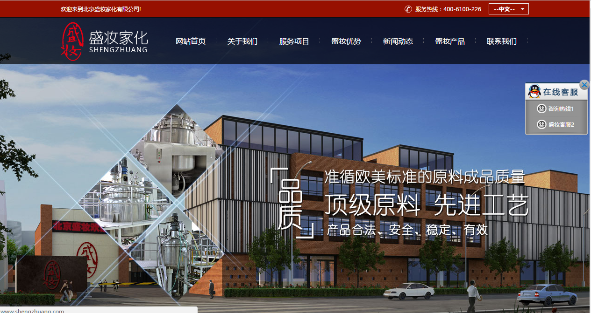
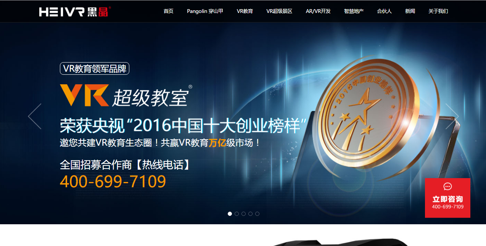
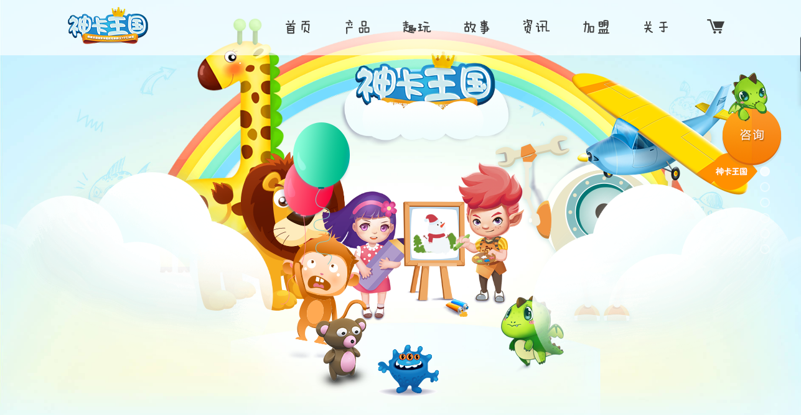
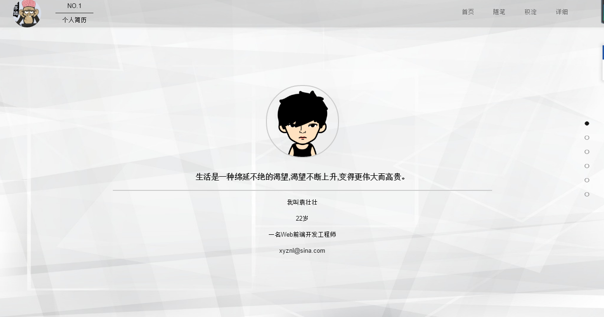
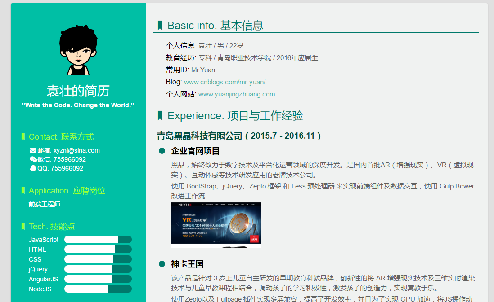
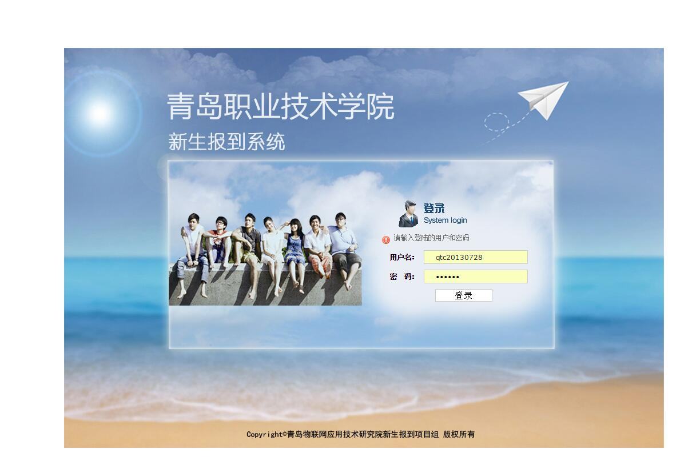

-
- Basic info. 基本信息
- 个人信息: 袁壮 / 男 / 22岁
- 常用ID: Mr.Yuan
- Blog: www.cnblogs.com/mr-yuan/
- 个人网站: www.yuanjingzhuang.com
-
- Experience. 项目与工作经验
北京盛装家化有限公司（2016.2 - 2016.11）
-
盛装家化官网项目 (2016.2-2016.5)
北京盛妆家化有限公司是中国最具有优势的化妆品加工制造企业。盛妆秉承“设计、研发、教育、制造”的长远发展方针，为所有的客户量身定制适合自己的产品配方，赋予每一个品牌鲜活的，持久的生命。
使用superslide实现PC端的轮播图等特效；用swiper实现移动端的页面特效；同时各有英文页面；用respond.js解决IE9以下版本的自适应问题；使用html5shiv.js解决IE9以下版本浏览器对HTML5新增标签不识别，并导致CSS3不起作用的问题
 -
盛装美丽屋APP+微信公众号 (2016.5-2016.10)
该项目集产品展示 , 加盟连锁 , 移动商城定位等功能为一体 , 使客户更方便快捷的加盟了解盛装家化的产品以及加盟流程；
根据需求，该项目采用HTML5+CSS3来进行开发页面，解决主流的手机终端上自适应问题，使用zepto来实现动画效果
青岛黑晶科技有限公司（2015.7 - 2016.11）
-
企业官网项目 (2015.7-2015.12)
黑晶，始终致力于数字技术及平台化运营领域的深度开发。是国内首批AR（增强现实）、VR（虚拟现实）、互动体感等技术研发应用的老牌技术公司。
使用 BootStrap、jQuery、Zepto 框架 和 Less 预处理器 来实现前端组件及数据交互，使用 Gulp Bower 改进工作流
 -
神卡王国 (2015.12-2016.3)
该产品是针对 3 岁上儿童自主研发的早期教育科教品牌，创新性的将 AR 增强现实技术及三维实时渲染技术与儿童早教课程相结合，调动孩子的学习积极性，激发孩子的创造力，实现寓教于乐。
兼容手机端和web端,自适应页面 , PC端全屏滚动 . 使用Zepto以及 Fullpage 插件实现多屏兼容，提高了开发效率，并且为了实现 GPU 加速，将JS操作动画替换为CSS3, 并且对于移动端布局有了一定的认识。

定陶美而特电子商务有限公司(2014.6-2014.9)
-
负责淘宝、天猫、京东店铺、网站的美工设计，页面特效，图片处理;
淘宝店铺的主页美化，制作促销、描述模板，根据公司产品的上架情况和促销信息自主制作促销广告位，对拍摄后的产品图进行校色、美化处理。
个人项目
-
个人博客（2016.2 - 至今）
Wordpress主题修改，内容维护
 -
个人简历（2016.8 - 至今）
www.yuanjingzhuang.com/resume/index.html
设计优雅、内容完善的静态简历页面，可以用浏览器直接生成合适尺寸的PDF
 -
学校新生报告系统（2014.4 - 2014.5）
系统采用B/S模式架构 , 用户可通过浏览器访问本系统。系统提供方便快捷的操作界面；它包括：用户登录、修改密码、扫描条码、分配宿舍、打印通知单、用户权限管理、公共宿舍管理、查询报表、查询报到率、查看宿舍分配情况等功能。极大的提高了新生入学报到速度，简化了报到流程。
主要负责页面的前台布局 , 以及通过原生JS与jQuery配合实现各部分的特效 , 辅助老师设计SQL 表 ； 期间学到了很多编程的技术也第一次体会到了团队开发的重要性

-
- Skill. 技能清单
Web前端
-
HTML / CSS
能够编写语义化的 HTML 精确还原设计图，模块化的 CSS，完成较复杂的布局
熟悉 Less 等CSS预处理和后处理方法、工具
-
JavaScript
熟悉原生Javascript，能脱离jQuery等类库编码
能运用模块化、面向对象的方式编程
熟悉 jQuery、Zepto、Bootstrap、AngularJS 等前端框架，有实际使用经验
了解 RequireJS SeaJS 的使用
-
其他
熟悉 Git Bower Gulp 前端自动化工具
有良好的美术功底，精通PS、AI等设计软件的使用
了解前端安全、性能优化方面的一些知识
后端
-
熟悉 NodeJS
熟悉 C，大学期间获得C语言编程大赛一等奖
了解 Linux 开发环境、 Linux 服务器环境搭建部署
了解 PHP 的基本语法
其他
-
是一个爱运动的人，喜欢骑行
轻微强迫症，不能忍受界面一个像素的偏差，同样不能忍受代码格式一个空格的偏差
学习能力强，以上绝大多数的技能都是自学修得的
能够熟练使用 Markdown 进行写作